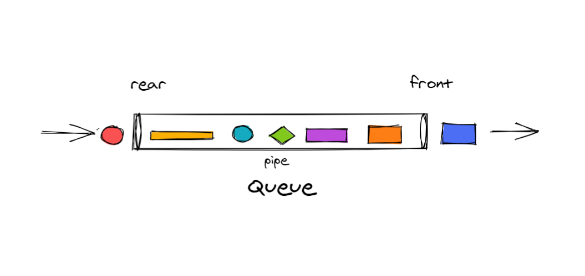
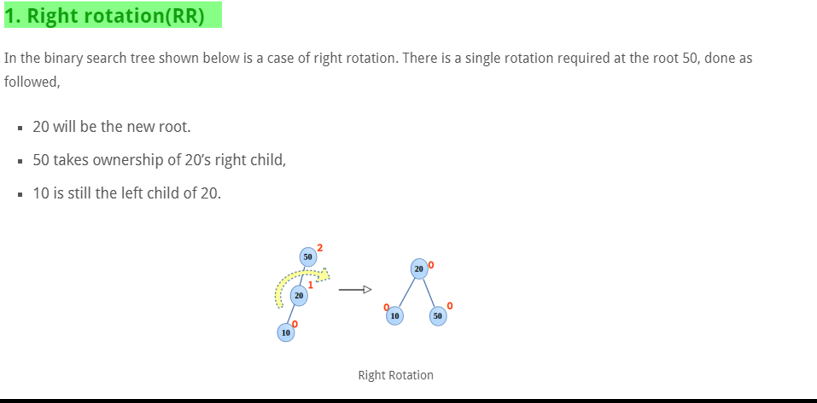

1 - Data Structure :
It is a special way to organize the data in the computer so that it can be used effectively and in the best possible way . To be as fast as possible and reduce the consumption of computer resources and optimizer
Indroduction :
Big-O :


Defintion :
Big- o : it is methode that enables us to know the best algorthm as well as compare between algorithm and another algo and find out which one is the best . This method depends on how long the algorthm take to run and how much RAM it consumes in the worst case for that algorithm .
Big- o : (Ranking from exellent to bad )


The best algo are those that have : Big-O in Worst Possible case for this algothme : O(Log n ) or O(1) and this is perfect algo possible.
2 - Sorting Algo :
BubbeSort
Definition :
BubbleSort : is algorthm for Sort

How Work :
-
It starts from the first element and compares with the elements in front of it. If it is found to be greater than it, it swaps, to the last of the array, or finds that the first element is smaller than it (violating the condition) cancels the operation and moves to the second element. And the process repeats. Until The array becomes ordered
- Note: the order in this algorithm starts at the end of the array, and every time the larger element is placed, it cancels out.
Big- O in Worst Case :
- Time Complexity: O(n2) " bad Algo "
- Space Complexity: O(1)
Selection Sort
Definition :
SelectionSort : is algorthm for Sort
How Work :
- Setep 1 : finds min elemnts in the array,
- Setep 2 : puts it in the first array, makes a swap, repeats this operation,
- Setep 3 : searches for the smallest min element, and repeats the same operation, ignoring the ordered element
Big- O in Worst Case :
- Time Complexity: O(n2) " bad Algo "
- Space Complexity: O(1) "good because RAM consumtion remains the same and you do not need to increase it , it remains constant
InsertionSort
Definition :
InsertionSort : is algorthm for Sort . its idea is that there is an ordered part and an unordered part

How Work :
- Setep 1 : First it divides an array into an ordered part and an unordered part.
- Setep 2 : take element from unordered part from array
- Setep 3 : and try to put it in an appropriate place in an ordered part . (and operation repate )
Note : it does not swap element but it does shifts and this increases the size of the array !!
Big- O in Worst Case :
- Time Complexity: O(n2) " bad Algo "
- Space Complexity: O(1)
MergeSort
Definition :
MergeSort : is algorthm for Sort . its idea is to break it up into small pieces and so it gets faster to sorting


How Work :
- Setep 1 : Divide it into two parts
- Setep 2 : the first part was divided in half ,the second part also
- Setep 3 : the same was sone for the other parts . Until it becomes indivisible .
- Setep 3 : Finally they are sorting and collected agin in array .
Big- O in Worst Case :
- Time Complexity: O(n log n)) good algo and faster
- Space Complexity: O(n)
QuickSort
Definition :
QuickSort : is algorthm for Sort .
How Work :
- Step 1: The first thing to choose is a Pivot, and it is best to choose it from the middle so that there is no problem.
- Step 2: The value of "Pivot" is taken, start from the left side and find an item that is larger than "Pivot"
- Setep 3 : Go to the other side and find an item the smaller than "Pivot", swap between the element in the right part and the left part. The process is repeated until the end of the sides.
- Setep 4 : the first side was taken and divided into two parts and the axis was chosen and the other part was also divided into two parts and the same process was repeated as before .
- Setep 5 : The same process is repeated until the array is ordered and collecting parts ( like in picture )
Big- O in Worst Case :
- Time Complexity: O(nlog2(n)) on average, O(n2) for worst case
- Space Complexity: O(n)
HeapSort
Definition :
HeapSort : is algorthm for Sort . and best Algo until now , it depens on the Binnary tree datastructure
How Work :
- Her idea is to do a process called Heapify that is, you take the smallest node and see if it is bigger than what is above it. If yes, you make a switch and so repeat the process until it ends and in all sides of the tree. Whenever Root becomes larger, you place it at the end of the array.
- This process was repeated
Big- O in Worst Case :
- Time Complexity: O(n log n) good
- Space Complexity: O(1) perfect worst spase
CountSort
Definition :
CountSort : is algorthm for Sort . Works by counting occurrences of each element in the array.
How Work :
Setep1
Setep2
Setep3
Setep4
- Setep 1 : Each elements count how many iterations in the array
- Setep 2 :Each elements is placed in the other's array with how many times it is repeated
- Setep 3 : the rest is like in picture .
Best Algo for Sorting in worst Case : 1 - HeapSort . 2 - MergeSort
3 - Searching Algo :
Linear Searching
Definition :
Linear Searching : is algorthm Simple Algo for searching but in worst Case is very bad algo
How Work :
its idea is to go through all the elements of the array one by one in order from the first element in the array until find them . The problem with this algorithm is that it needs to pass through all the elements .
Binary Search
Binary Search
Definition :
Binary Search : It is a very fast search algorithm (In the worst case, it remains fast (O(log n)))
How Work :
- Setep 1 : Serach mid with use this rule ( mid = (low + high)/2) .
- Setep 2 : it search that 'mid'. where is in array and points to it .
- Setep 3 : it sees and compares whether a number is greater than mid , less than mid,or is ithimself . if it is smaller,it cancels the other part and searches only in the rest part by repeating the same process of serching for mid .
- Setep 4 :And he repeats this process until he finds value .
4 - Data Structure Linear :

LinkList
Definition :
1 - LinkList : A linked list is a data structure that has sequence of nodes where every node is connected to the next node by means of a reference pointer. The elements are not stored in adjacent memory locations. They are linked using pointers to form a chain.
- Each node consists of :
- value
- Adress next node


Basic Methode :
Double LinkList
Definition :
2 - Double LinkList : A linked list is a data structure that has sequence of nodes where every node is connected to the next node by means of a reference pointer. The elements are not stored in adjacent memory locations. They are linked using pointers to form a chain.( the Difference between it and the first is that here he can go back in linklist )
- Each node consists of :
- value
- Adress next node
- Adress prev node

Basic Methode :
- Insertion − Adds an element at the beginning of the list.
- Delete − Deletes an element from the list using the key.
- Insert Last − Adds an element at the end of the list.
- Delete Last − Deletes an element from the end of the list.
- Insert After − Adds an element after an item of the list.
- Display forward − Displays the complete list in a forward manner.
- Display backward − Displays the complete list in a backward manner.
3 - Stack
Definition :
Stack : is a linear data structure in which the insertion and deletion operations are performed at only one end. In a stack, adding and removing of elements are performed at a single position which is known as "top". That means, a new element is added at top of the stack and an element is removed from the top of the stack. In stack, the insertion and deletion operations are performed based on LIFO (Last In First Out) principle.
Ideea How Work :
Its idea is that the first thing that enters is the last that goes out, and the last thing that enters is the first that goes out. Second, it has one output that can be pulled . And also it is possible just to pulling from one side and in the order and pulling the last thing , and so :
Basic Methode :

4 - Qeune
Definition :
Queue : is a linear data structure . the insertion and deletion operations are performed based on FIFO (First In First Out) principle.
Her idea is the first thing that enters is the first thing that goes out and the last thing is the last thing, and she has an entrance and she has an exit ( Others have to wait for the one in front of them to come out .) Basic Methode :
HashTable
5 - HashTable
Definition :
HashTable : A hash table is a fixed-sized data structure in which the size is defined at the start
- Setep 1 : serach with key
- Setep 2 :hashing key ( hash function "" ) : ( for get data ) " it becomes difficult for anyone to acces data if he dont know funchtion hash "
- Setep 3 :when hash key convert to adress . if this adress is in array , return value from array .
one of type of algothme hash function : one of hashing algothme it's called(division methode ) : hashin function = key % size
its advantages :
- quick search because it goes directly to where the data is .
- A group of data can have the same Key
- No anyone can acces to data because data hashing he need know algo used in hashing
5 - Recurision
Definition : it is function that repeats itself (the Algorthm in which it is repeated)
Recurision :
Big Data Structure Linear :
5 - Data Structure Non - Linear :
1 - Tree

Definition : it is type of data structure in the form of a tree .
every node contains of value and left and right ( it is Pointer)
2 - Binary Tree
Definition : A binary tree is a special type of tree data structure in which every node can have a maximum of 2 children. One is known as a left child and the other is known as right child.
3 - Search Binary Tree


Ideea : A binary search tree (BST) is a binary tree where every node in the left subtree is less than the root, and every node in the right subtree is of a value greater than the root
Its advantages are high search speed And more if it's balanced
Big o :
- Time Complexity (for balanced tree): O(log n ) : good
- Time Complexity (for unbalanced tree): O(n) :
4 - Avl Tree

Defintion : AVL is a binary search tree that balances itself
Its advantages are high search speed Because it is always balanced . the big O in worst case O(log n)
How Know is blanced :
how makes
- 1 - You go to parent node and see on the right to the last node how many nodes are there and write them and the left of how many are node and count their number .( as picture which before )
- 2 - The same operation was carried out on the right side (right sub-tree ) .
- 3- In the end, what you do takes the result of the left part and the result of the right part and performs a minus operation if any -1 0 +1 it is balanced, otherwise it is unbalanced you need to make it balanced.
Methods used for balanced Tree : ( after checked is not balanced )
Big o :
- Time Complexity : O(log n)
5 - Heap

Definition : - Heap is a special case of balanced binary tree data structure where the root-node key is compared with its children and arranged accordingly . - A heap is a type of tree-like data structure in which the parent is bigger than its children (if max-heap) or smaller than its children (if min-heap). This property of the heap makes it useful for sorting data
Max-Heap :

- Each key in node must be large as possible among the keys in all subkeys. The same property must be true recursively for all subtrees in that Binary tree
Min-Heap :
- contrary Max-Heap
Big o :
- Time Complexity : O(log n ) : good
6 - Binary Tree Traversal :
Definition : Algorithms to be able to browse through the binary tree
Pre-order (root left right):
In-order (left root right)
Post-order (left right root ) :

6 -Graph :
Definition : A Graph is a non-linear data structure consisting of nodes and edges. The nodes are sometimes also referred to as vertices and the edges .
Its components :
A Graph consists of a finite set of vertices(or nodes) and set of Edges which connect a pair of nodes.
Types Graphs :

Defintion Graph Direct and Undirected :
Exemple Used in real life
Graphs are used to solve many real-life problems. Graphs are used to represent networks. The networks may include paths in a city or telephone network or circuit network. Graphs are also used in social networks like linkedIn, Facebook. For example, in Facebook, each person is represented with a vertex(or node). Each node is a structure and contains information like person id, name, gender, locale etc.